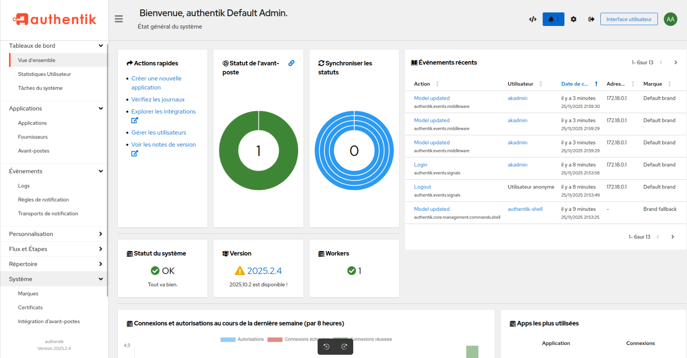

Contexte du Projet
Projet réalisé dans le cadre d'une SAÉ du BUT Informatique, en binôme. L'objectif était de concevoir et déployer une infrastructure applicative réaliste, proche d'un environnement professionnel, intégrant plusieurs services applicatifs, une gestion centralisée des identités, un accès sécurisé via HTTPS, et un mécanisme de Single Sign-On (SSO).
Le projet a été mené de bout en bout, depuis une première version locale jusqu'à un déploiement accessible via un nom de domaine public.
Objectifs
- Concevoir une infrastructure conteneurisée modulaire avec Docker
- Centraliser l'authentification via un fournisseur d'identité unique
- Mettre en place le Single Sign-On (SSO) entre plusieurs services
- Sécuriser l'accès aux services (HTTPS, proxy inverse, isolation réseau)
- Simuler une infrastructure d'entreprise réaliste
Architecture Globale
L'infrastructure repose sur :
- Docker & Docker Compose pour le déploiement des services
- Un réseau Docker privé (bridge) pour isoler les conteneurs
- Un reverse proxy Traefik pour exposer les services et gérer le routage
- Cloudflare Tunnel pour l'accès distant sécurisé sans ouverture de ports
- Un fournisseur d'identité central (Authentik) relié à un annuaire LDAP
Tous les services applicatifs délèguent l'authentification à Authentik.



Gestion des Identités & Authentification
OpenLDAP
- Utilisé comme annuaire central d'utilisateurs
- Joue le rôle de source de vérité des identités
- Simule un environnement d'entreprise réel
Authentik (IAM / SSO)
- Fournisseur d'identité central
- Gère l'authentification, les flux OAuth2 / OpenID Connect, les redirections SSO
- Connecté à OpenLDAP pour la synchronisation des comptes
- Utilisé comme point d'entrée unique pour tous les services
Résultat : Un utilisateur s'authentifie une seule fois et accède à tous les services autorisés
Services Applicatifs Intégrés
Nextcloud – Stockage collaboratif
- Service de partage et stockage de fichiers
- Authentification déléguée à Authentik via OpenID Connect
- Base de données dédiée + volumes persistants
Mattermost – Messagerie collaborative
- Outil de communication interne
- Intégration SSO via OAuth/OpenID Connect avec Authentik
- Configuration spécifique de la confiance proxy pour fonctionner derrière Traefik
Portainer – Administration Docker
- Interface d'administration de l'infrastructure Docker
- Authentification OAuth2 via Authentik
- Cas technique complexe : gestion des redirections OAuth, configuration HTTPS
Accès & Sécurisation
Reverse Proxy Traefik
Routage basé sur les noms de domaine, séparation HTTP/HTTPS, injection des headers nécessaires, redirection HTTP → HTTPS
Cloudflare Tunnel
Exposition des services sans ouvrir de ports entrants, chiffrement HTTPS automatique, accès via domaines publics (auth.rayanec.com, cloud.rayanec.com, etc.)
Mesures de Sécurité
Authentification centralisée, isolation réseau via Docker, bases de données non exposées, HTTPS obligatoire, réduction de la surface d'attaque
Gestion Proxy
Configuration fine des headers, gestion de la confiance proxy pour éviter les attaques CSRF/spoofing, alignement strict OAuth entre Authentik et services
Problèmes Rencontrés & Résolutions
SSO instable en HTTP
Solution : Passage obligatoire en HTTPS pour tous les flux d'authentification
Erreurs OAuth (redirect_uri)
Solution : Alignement strict entre Authentik et services, correction des URLs de discovery
Portainer inaccessible derrière proxy
Solution : Configuration fine des headers et des endpoints OAuth
Mattermost refusant certaines requêtes
Solution : Déclaration des IP de proxy fiables et gestion correcte des en-têtes X-Forwarded-*
Ces difficultés ont nécessité de nombreux tests, des itérations, des redémarrages de services, et une compréhension fine des protocoles OAuth2 / OIDC.
Technologies Utilisées
Compétences Développées
Architectures SSO
Compréhension concrète des architectures d'authentification unique et des protocoles OAuth2/OIDC
Sécurité by Design
Mise en pratique de la sécurité dès la conception de l'infrastructure
Outils Professionnels
Travail sur des outils réellement utilisés en entreprise (Docker, Traefik, LDAP)
Travail Collaboratif
Gestion de projet en binôme avec approche itérative et résolution de problèmes réels
Note : La démonstration en ligne est accessible uniquement lorsque le serveur est démarré. Si le lien ne fonctionne pas, n'hésitez pas à me contacter pour organiser une démonstration en direct.